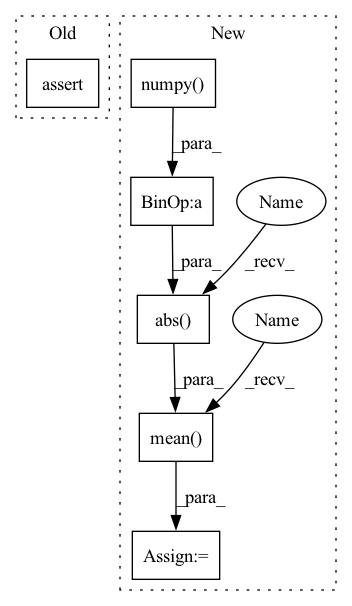

Pattern ID :10867

Before Change
diff = np.mean(np.abs(res - res_mm.numpy()))
print(size, filter_shape, "%2.2e." % diff,
np.allclose(res, res_mm.numpy()))
assert np.allclose(res, res_mm)
if __name__ == "__main__":
After Change
padding=(filter_shape[0]-1, filter_shape[1]-1))
diff_scipy = np.mean(np.abs(res_scipy - res_mm.numpy()))
diff_torch = np.mean(np.abs(res_torch.numpy() - res_mm.numpy()))
print(size, filter_shape, "%2.2e." % diff_scipy,
np.allclose(res_scipy, res_mm.numpy()),
"%2.2e." % diff_torch, np.allclose(
res_torch.numpy(), res_mm.numpy()))
In pattern: SUPERPATTERN
Frequency: 3
Non-data size: 6
Instances
Fragment ID: 37469727
Project Name: v0lta/pytorch-wavelet-toolbox
Commit Name: 0b6d39b0c8b64def69279554ecfafa2cb1234942
Time: 2021-09-09
Author: moritz@wolter.tech
File Name: tests/test_boundary_filters.py
M Class Name: AnonimousClass
N Class Name: AnonimousClass
M Method Name: test_mean_conv_matrix_2d(0)
N Method Name: test_mean_conv_matrix_2d(0)
M Parent Class:
N Parent Class:
M File Name: tests/test_boundary_filters.py
N File Name: tests/test_boundary_filters.py
M Start Line: 71
M End Line: 71
N Start Line: 48
N End Line: 79
'>
Before Change
diff = np.mean(np.abs(res - res_mm.numpy()))
print(size, filter_shape, "%2.2e." % diff,
np.allclose(res, res_mm.numpy()))
assert np.allclose(res, res_mm)
if __name__ == "__main__":
After Change
padding=(filter_shape[0]-1, filter_shape[1]-1))
diff_scipy = np.mean(np.abs(res_scipy - res_mm.numpy()))
diff_torch = np.mean(np.abs(res_torch.numpy() - res_mm.numpy()))
print(size, filter_shape, "%2.2e." % diff_scipy,
np.allclose(res_scipy, res_mm.numpy()),
"%2.2e." % diff_torch, np.allclose(
res_torch.numpy(), res_mm.numpy()))
'>
Fragment ID: 37469730
Project Name: v0lta/pytorch-wavelet-toolbox
Commit Name: 0b6d39b0c8b64def69279554ecfafa2cb1234942
Time: 2021-09-09
Author: moritz@wolter.tech
File Name: tests/test_boundary_filters.py
M Class Name: AnonimousClass
N Class Name: AnonimousClass
M Method Name: test_mean_conv_matrix_2d(0)
N Method Name: test_mean_conv_matrix_2d(0)
M Parent Class:
N Parent Class:
M File Name: tests/test_boundary_filters.py
N File Name: tests/test_boundary_filters.py
M Start Line: 71
M End Line: 71
N Start Line: 48
N End Line: 79
'>
Before Change
print(wavelet.name, "orthogonal error", err_orth, "size", size)
// print("db8 size inverse error", err_inv)
assert err_orth < 1e-6
// assert err_inv < 1e-6
After Change
// test_eye_inv = torch.sparse.mm(a_db8, s_db2.to_dense()).numpy()
test_eye_orth = torch.mm(analysis_matrix.transpose(1, 0), analysis_matrix).numpy()
test_eye_inv = torch.mm(analysis_matrix, synthesis_matrix).numpy()
err_inv = np.mean(np.abs(test_eye_inv - np.eye(size)))
err_orth = np.mean(np.abs(test_eye_orth - np.eye(size)))
print(wavelet.name, "orthogonal error", err_orth, "size", size)
print(wavelet.name, "orthogonal error", err_inv, "size", size)
'>
Fragment ID: 37469729
Project Name: v0lta/pytorch-wavelet-toolbox
Commit Name: b65940a81be76b82438df30439665c48508f44b6
Time: 2021-09-06
Author: moritz@wolter.tech
File Name: tests/test_boundary_filters.py
M Class Name: AnonimousClass
N Class Name: AnonimousClass
M Method Name: test_boundary_filter_analysis_and_synthethis_matrices(0)
N Method Name: test_boundary_filter_analysis_and_synthethis_matrices(0)
M Parent Class:
N Parent Class:
M File Name: tests/test_boundary_filters.py
N File Name: tests/test_boundary_filters.py
M Start Line: 45
M End Line: 45
N Start Line: 34
N End Line: 49
'>
Before Change
np.abs(np.concatenate(coeffs) - torch.cat(coeffs2, -1).squeeze().numpy())
)
print("haar coefficient error scale 2", err, ["ok" if err < 1e-4 else "failed!"])
assert err < 1e-4
def test_conv_fwt_haar_lvl2_odd():
After Change
err = np.mean(np.abs(pywt_coeffs - ptwt_coeffs))
print("haar coefficient error scale 2", err, ["ok" if err < 1e-6 else "failed!"])
assert np.allclose(pywt_coeffs, ptwt_coeffs)
rec = waverec(coeffs2, wavelet).squeeze().numpy()
err = np.mean(np.abs((data - rec)))
print("haar reconstruction error scale 2", err, ["ok" if err < 1e-6 else "failed!"])
assert np.allclose(data, rec)
def test_conv_fwt_haar_lvl2_odd():
'>
Fragment ID: 37469728
Project Name: v0lta/pytorch-wavelet-toolbox
Commit Name: c52a0038ca7ceb817da834840a1655d55ff6f1a3
Time: 2021-07-02
Author: moritz@wolter.tech
File Name: tests/test_convolution_fwt.py
M Class Name: AnonimousClass
N Class Name: AnonimousClass
M Method Name: test_conv_fwt_haar_lvl2(0)
N Method Name: test_conv_fwt_haar_lvl2(0)
M Parent Class:
N Parent Class:
M File Name: tests/test_convolution_fwt.py
N File Name: tests/test_convolution_fwt.py
M Start Line: 42
M End Line: 49
N Start Line: 22
N End Line: 56